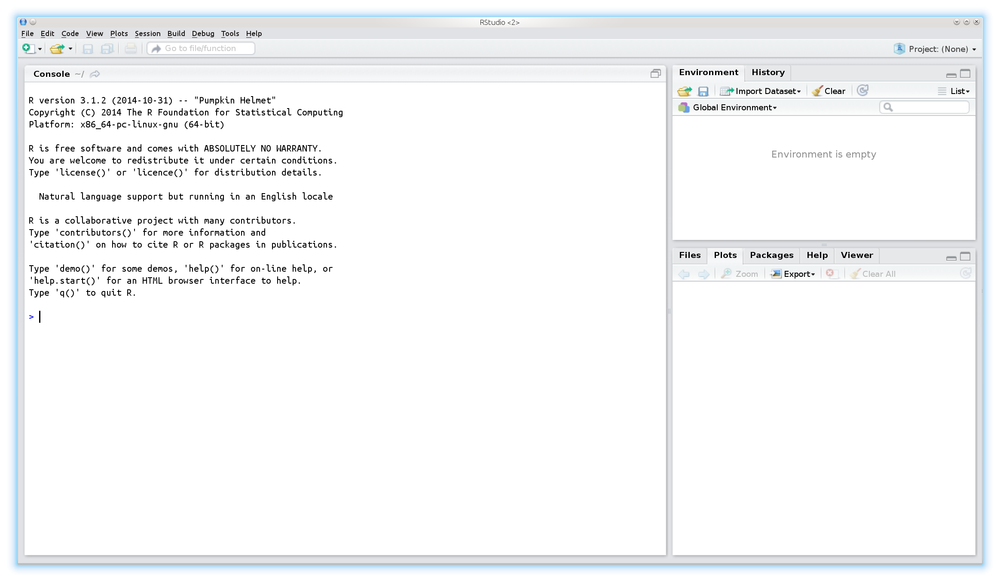

Introduction to R
Daniel Fischer
Natural Resources Institute Finland, Green Technology
Introduction
Overview
- Introduction
2.
History of R
R was started by Ross Ihaka and Robert Gentleman (the ”R & R’s” of the University of Auckland) in 1992.
R is an environment and language for data manipulation, calculation and graphical display.
R is published under GNU licence. This means it is an open source program and is distributed for free.
R can be seen as an implementation or dialect of the S language. S was developed by Becker and Chambers 1984.
The origin of the name is not known anymore (although there are obvious possibilities...).
Why to use R?
It is easy. Compared to real programming languages, R has a simplified syntax that can be used without big learning efforts.
It is open source. This means you can alter or check every piece of code (or hope at least that someone else does it...).
It is friendly. Usually the mailing lists (”Rhelp”) or online discussion forums (e.g. 'StackOverflow') are fast, friendly and helpful.
It is an universal tool. Usually there is a function in R for everything, or if there isn’t, soon there will be.
Why not to use R?
It is difficult. Compared to graphical-interface based tools like Excel a console might be shocking and repellent.
It is open source. This means, you have to trust the functions are correct - but noone gives you a warranty for this. Use it on own risk!
It is hostile. Mailing lists (”Rhelp”) or online discussion forums (e.g. 'StackOverflow') don’t like reocurring questions or questions showing no own efforts to solve a problem.
It is static. These days the figures are too static compared to other, competing languages like Matlab. You hardly can interact with created figures.
It is slow. Compared to real programming languages, R is slow (the price for being easy...), but C,C++ and other languages can be included into R programs to boost the speed.
Where to get R?
R is pre-compiled available for every common operating system, like Windows, Linux and Mac , and also for 32 and 64bit.
It can be downloaded from the CRAN (”Comprehensive R Archive Network”) webpage: http://cran.r-project.org.
Usually there are 2-3 major updates per year.
Linux user that use the apt package system, can include the CRAN server into it and receive those updates then automatically.
On CRAN are also thousands of additional extensions (”packages”) available.
The Bioconductor projects offers on top of that also hundreds of packages specialized for genomic data analysis.
How does R look like?

How to use a console?
The symbol that 'waits' for the input is usually the > sign.
One usually types the command there and sends it to the interpreter by pressing the Return key.
If a command line starts with + instead of > the interpreter expects further input.
Common reason for this are still open parantheses or quotations.
A history of the last commands is accesible using the arrow keys ↑↓.
The console is case-sensitive.
How to start?

How to start?

The script window
Using the console is alright for simple commands, but as soon as you apply a sequence of commands it gets messy
For larger projects (e.g. analysing datasets) it is much more convenient to write and run a script.
This has the advantage that the commands can easily be stored, changed and distributed.
It is much easier to keep the overview over the project.
It is easier to prepare the script and run it then as whole.
Copy+Paste for similar tasks
Where to get help?
For each function in R exists a help file, that can be accessed with
?This means, in order to get the help for the function foo type?foointo the console.If you forgot a function name but have a wild guess how it was, the
apropos()command is usefull. In order to check for all commands that contain the word ’test’ typeapropos("test").Of course Google is always a good place to search
A very helpful online ressource is also http://www.stackoverflow.com
A typical workflow in R
Open the data with a (good...) text editor or Excel and inspect its properties:
a. Is the first line a header-line?
b. What is the separator between the columns?
Import the data to R
Apply some data transformation and calculate desired statistics
Visualize the results
Store all results
Import Data to R
Working directory I
The term ’working directory’ refers in R to the place on the hard drive, where R looks for files, stores Figures etc.
All paths and filenames that are given relative to this specific location.
Of course it is possible to check and change this location.
A typical workflow of a project is that in the beginning the working directory is set to the project folder on the hard drive.
The command to check the working directory is
getwd()and the one for setting it issetwd().
Working directory II
- An example how the working directory is extracted and set using windows:
getwd()
> [1] "C:/Program Files/R/R-3.0.2"
setwd("C:/temp/")
getwd()
> [1] "C:/temp"
- The file system is a bit different in Linux, a typical path looks there like /home/ejo123/myProjects.
Import ASCII files I
Datasets that are imported to R are typically given in ASCII format. .
Other formats are possible, but I'd recommend to stay with ASCII/text files.
ASCII is a plain text format and common file extensions are .txt or .csv. Before reading files into R it is advisable to open them first with a text editor in order to check the properties of the files. One should focus especially on the following things:
What is the column separator (Whitespace, comma, tab, etc.)?
Is the first line a data line or does it contain the variable names?
Are real numbers given with comma or point (e.g. is it 5,25 or 5.25)?
How is missing data encoded (e.g. NA, dot, whitespace)?
Import ASCII files II
In order to read an ASCII file to R, we perform the following steps:
Set the working directory to the path where the data is located.
Check for above mentioned properties
Read the data and assign it to an object. The command is
myData <- read.table(file="theData.txt", header=FALSE, sep="\t")
In this case the first line contained already data (If the first line are the
variable names, the option is header=TRUE) and the columns are
separated with TAB (\t is the so-called escape-seqence for TAB, other
separators are usually given as they are.)
Import ASCII files III
Overview of important import options in read.table():
sepWhat is the column separator? Typical values are:",",";"," ","\t"headerLogical, contains the first row variable names or not? Possible values:TRUE,FALSEna.stringHow are missing values encoded? Typical values:NA,"."decWhat is used as decimal symbol?as.isLogical, shall R try to predict the ’right’ data format?colclassesVector of predefined column classes.stringsAsFactorsLogical, handle strings as factors?
Import other files to R
Other file formats can also be imported to R, but it usually requires more efforts.
There are functions that read, e.g. Excel tables, but it is not very advisable to use them, as those data formats are usually proprietary and hence developers cannot provide full functionality. The easiest way to import an excel sheet to R is it to open it with Excel, save it as ASCII file and procede as above mentioned.
Another way to import data is to connect directly to a MySQL database, but this is above the scope of the course and will be discussed in an advanced course.
Example data
You can download example data from here: Titanic-data stressEcho
Just Right-click, choose 'Save as' and store them on your HDD.
These datasets we will use throughout the whole course to learn the different methods.
"Data obtained from http://biostat.mc.vanderbilt.edu/DataSets".
Titanic passenger information variables:
- pclass (Passenger class)
- survived (yes=1, no=0)
- name
- sex (female/male)
- age
- sibsp (Number of Siblings/Spouses Aboard)
- parch (Number of Parents/Children Aboard)
- ticket (Ticket Number)
- fare (Passenger Fare British Pound)
- cabin (Cabin number)
Titanic passenger information variables (continued):
- embarked (S, Q, C=)
- boat
- body Body Identification Number
- home.dest Home/Destination
Stress echo data
- bhr Basal heart rate (bpm) integer
- basebp Basal blood pressure mmHg integer
- basedp Basal Double Product bhr TIMES basebp bpm TIMES mmHg integer
- pkhr Peak heart rate mmHg integer
- sbp Systolic blood pressure mmHg integer
- dp Double product pkhrTIMESsbp bpm TIMES mmHg integer
- dose Dose of dobutamine given mg integer
- maxhr Maximum heart rate bpm integer
- pctMphr Percent maximum predicted heart rate achieved % integer
- mbp Maximum blood pressure mmHg integer
- dpmaxdo Double product on max dobutamine dose bpm TIMES mmHg integer
- dobdose Dobutamine dose at max double product mg integer
- age Age years integer
Stress echo data (continued)
- gender 2 integer
- baseEF Baseline cardiac ejection fraction % integer
- dobEF Ejection fraction on dobutamine % integer
- chestpain Chest pain integer
- restwma Resting wall motion abnormality on echocardiogram integer
- posSE Positive stress echocardiogram integer
- newMI New myocardial infarction integer
- newPTCA Recent angioplasty integer
- newCABG Recent bypass surgery integer
- death integer
- hxofHT History of hypertension integer
- hxofDM History of diabetes integer
- hxofCig History of smoking 3 integer
Stress echo data (continued)
- hxofMI History of myocardial infarction integer
- hxofPTCA History of angioplasty integer
- hxofCABG History of coronary artery bypass surgery integer
- any.event Death, newMI, newPTCA, or newCABG integer
- ecg Baseline electrocardiogram diagnosis 3 integer
Hands-on: Import the Example data
After having downloaded the titanic data, import it to R and name it
titanicAfter having downloaded the stress echo data, import it to R and name it
stress
(If you have your own data, )
Hint
Open the file in a text editor (NOT Word)
Check the first line, is a header present or not?
How are the different cells separated?
Solution: Import the Titanic data
setwd("/home/ejo138/Projects/lectures/IntroductionToR")
titanic <- read.table("titanic3.csv", sep=",", header=TRUE)
stress <- read.table("stressEcho.csv", sep=",", header=TRUE)
The R workspace I
As already mentioned now several times, everything is considered to be an object in R. These objects are living in the so-called workspace. The workspace in R is comparable with a desk. The content of this workspace/desk can be shown with the command
ls()
[1] "stress" "titanic"
The ls() command shows all active R objects, unneeded objects can be
removed via rm() command. Assuming we have an object foo we can
remove it be typing
rm(foo)
and all objects of a workspace can removed by
rm(list=ls())
The R workspace II
One can store the entire workspace and restore it later on. For that are the
commands save.image() and the load()command available.
If one want to save a workspace the command is
save.image(file="myRsession.RData")
and one can load it via
load(file="myRsession.RData")
This is especially then usful when one works on different projects where the calculations take a while and cannot be easily repeated.
How to continue
After importing the data to R, the first step is to check if the data was imported properly!
It is a common source of error to import the data wrongly without noticing it in the first place!
But how to check if the data was imported properly? For that some background of R's data types and data structures is needed.
Each (data) object in a programming language is of a certain type and is handled different.
R knows basically 5 different data types:
- The empty set. Example:
NULL. Name: NULL. - Logical values. Example:
TRUE. Name: logical. - Real values. Example:
3.13or4. Name: numeric. - Complex values. Example:
5.22+1i. Name: complex. - Letters and strings. Example:
"Hei hei". Name: character.
Standard data formats I
In R everything is an object.
Although R isn't a classical object orientated programming language, we use this term here.
Values can be stored in variables.
Variables can be of very different type and have very different properties, depending on the purpose for what we need them!
Also functions return objects (also here are different types possible).
Question: What for do I need these variables and how do I use them?!
Standard data formats II
The standard data objects for numbers (numeric) and strings (character) are
vectormatrixordata.framelistarrayfactor(function)
Each data structure has it’s own properties and we are going through them soon.
The main idea of a data structure is to store the previous result and make it later accessible!
data structure: Vector
The vector structure is similar to vectors known from mathematics.
You can compare vectors with houses along a street.
There is clearly defined how many houses there are (= length of the vector).
Each house has it’s clear position that can be addressed.
The only difference is, at each postion only one element is allowed and all elements have to be the same type. (This is then the difference to a real street, hopefully!)
Data structure: Vector II
A vector in R is a sequence of elements that have all the same mode.
The easiest way to create a vector is using the
c()function.The function is used as follows:
vectorname <- c(value1, value2, ...)
- A single number is also treated like a vector but can be easier assigned to an object:
vectorname <- value1
Data structures: Vector III
- Let’s assign some values:
peter.height <- 190
paul.height <- 188
kati.height <- 179
These are now special type of vectors, because they have just length 1!
Let’s combine now these special vectors:
all.height <- c(peter.height, paul.height, kati.height)
heights <- c(190, 188, 179)
Data structures: Vector IV
- Just by typing the name of an object (here the vector) into the console, R displays its content.
all.height
[1] 190 188 179
heights
[1] 190 188 179
Data structure: Vector V
- As mentioned in the street example, each position in a vector can be addressed:
heights[1]
[1] 190
all.height[3]
[1] 179
We can also see the length of a vector:
length(heights)
[1] 3
Data structure: matrix I
The matrix structure is also similar to matrices known from mathematics.
You can compare them with a chessboard.
There is clear defined how many fields there are (= 'product of the edges').
Each cell has it’s clear position that can be addressed.
The only difference is also here all elements have to be the same type and it can be rectangular, with arbitrary sizes.
Data structure: matrix II
- Matrices are filled using vectors:
myMatrix <- matrix(c(1,2,3,4,5,6), ncol=3)
myMatrix
[,1] [,2] [,3]
[1,] 1 3 5
[2,] 2 4 6
myMatrix2 <- matrix(c(1,2,3,4,5,6), ncol=3, byrow=TRUE)
myMatrix2
[,1] [,2] [,3]
[1,] 1 2 3
[2,] 4 5 6
Data structure: matrix III
- And also here, we can get the certain dimensions
nrow(myMatrix)
[1] 2
ncol(myMatrix)
[1] 3
length(myMatrix)
[1] 6
Data structure: matrix IV
- In order to access specific elements in a matrix, we have to give 2 positions, or the column/row number of interest
myMatrix[1,3]
[1] 5
myMatrix[2,]
[1] 2 4 6
myMatrix[,1]
[1] 1 2
Data structure: matrix V
We can also change certain entries in the matrix
myMatrix[1,3] <- 100
myMatrix
[,1] [,2] [,3]
[1,] 1 3 100
[2,] 2 4 6
myMatrix[1,] <- c(5,9,2)
myMatrix
[,1] [,2] [,3]
[1,] 5 9 2
[2,] 2 4 6
Data structure: matrix VI
We can also change certain entries in the matrix
myMatrix[,2] <- c(7,3)
myMatrix
[,1] [,2] [,3]
[1,] 5 7 2
[2,] 2 3 6
Interruption
It is already time to review some things that happened here!
- We saw that basically everything happened by using functions. The general syntax was:
Functionname(Argument)
We saw also that all functions return objects, e.g. the command to get the number of rows of matrix
nrow()gives a vector of length 1 with the result.As a special command we had the
matrix()command. Maybe you have noticed that it took 2 arguments as input! These arguments have been separated by comma and we will see this more frequent in the future!
Hands-On: Assigning values
- Assign values 4, 6 and 12 to the object
test - Change the second element of
testthen to 14 - Create a matrix testMat that looks like this:
testMat
[,1] [,2]
[1,] 5 3
[2,] 6 12
- Display the second column of the matrix testMat
Hands-On: Solutions 1&2
- Assign values 4, 6 and 12 to the object
test
test <- c(4,6,12)
test
[1] 4 6 12
- Change the second element of
testthen to 14
test[2] <- 14
test
[1] 4 14 12
Hands-On: Solutions 3&4
- Create a matrix testMat that looks like this:
testMat <- matrix(c(5,3,6,12),ncol=2)
testMat
[,1] [,2]
[1,] 5 6
[2,] 3 12
- Display the second column of the matrix testMat
testMat[,2]
[1] 6 12